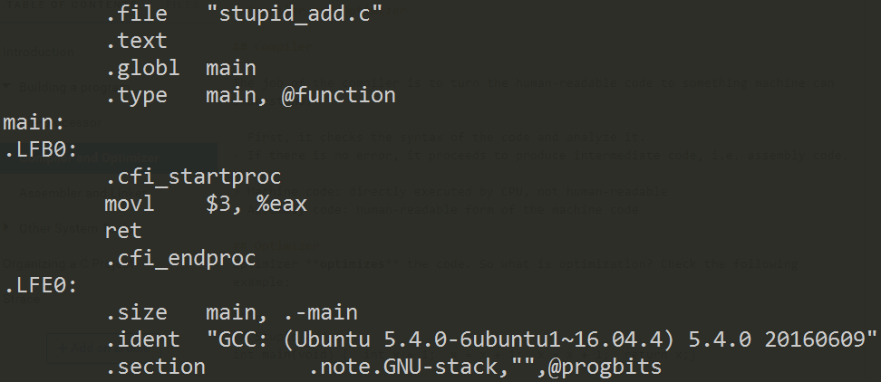

Compiler and Optimizer
Compiler
The job of the compiler is to turn the human-readable code to something machine can understand.
- First, it checks the syntax of the code and analyze it.
- If there is no error, it proceeds to produce intermediate code, i.e. assembly code.
Machine code: directly executed by CPU, not human-readable
Assembly code: human-readable form of the machine code
Optimizer
Optimizer optimizes the code. So what is optimization? Check the following example:
// Stupid_add.c
int main(void) {
int x = 1;
x = x + 1;
x = x + 1;
return x;
}
We can use gcc -O options to indicate optimization.
-O means to Optimize.
The number followed is the optimization level.
- -O means no optimiation.
- Maximum level is 3.
Try the difference of :
gcc –S stupid_add.c –O0 –o add_O0.s
gcc –S stupid_add.c –O1 –o add_O1.s
add_O0.s

add_O1.s 
You can discover that, with more optimization level, more compact the code is. The repeated steps are condensed into one single command instead.